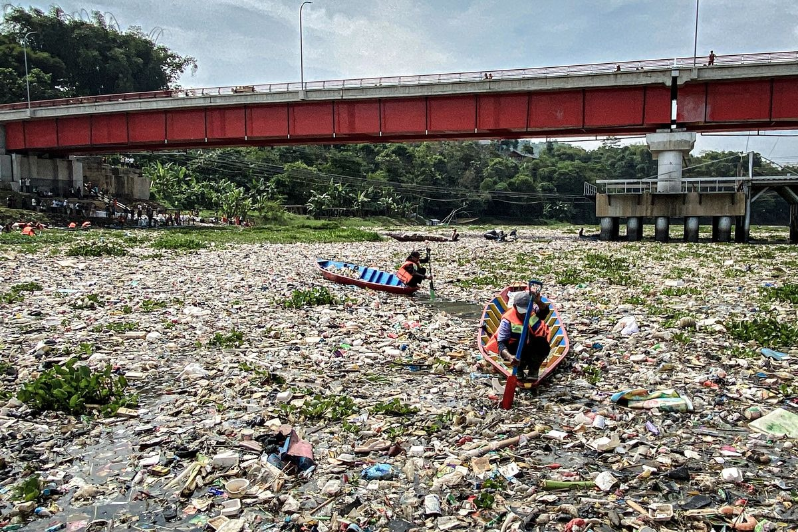
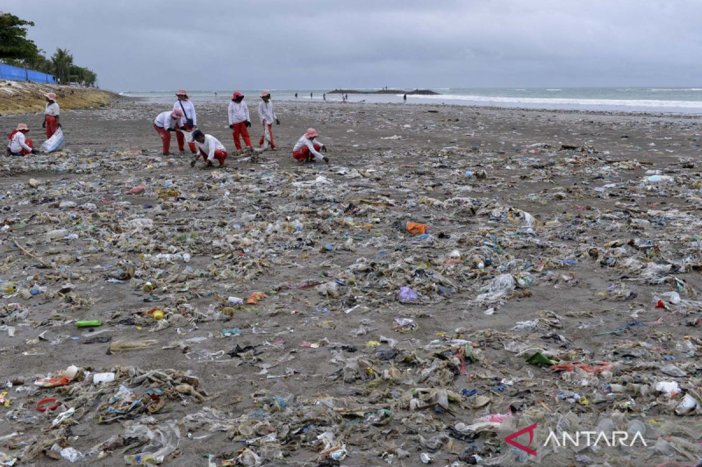
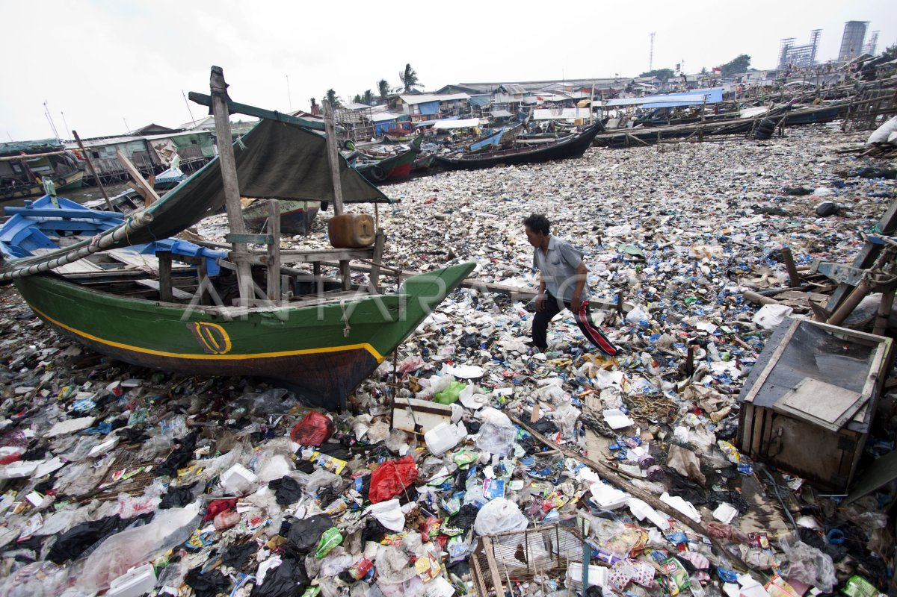
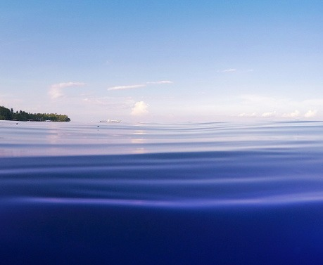
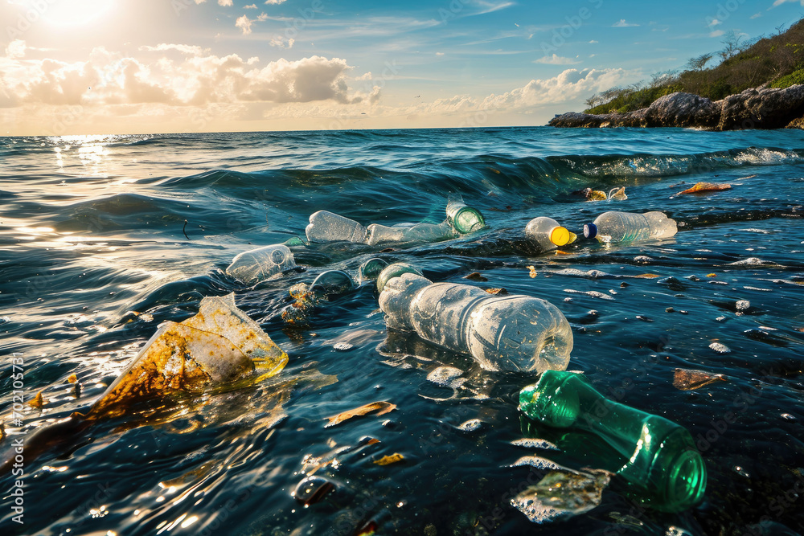

Halaman 2 · Artikel
Laut Sedang Tidak Baik-Baik Saja
Pencemaran laut dan sampah pantai di Indonesia bukan isapan jempol.
Data dan kasus nyata membuktikan bahwa kita sedang menghadapi krisis
yang perlu segera ditangani.
Bagaimana kondisi laut Indonesia 20 tahun ke depan jika pencemaran terus terjadi?
Menurut pemberitaan Kompas.com yang berjudul “20 Tahun ke Depan, Laut Indonesia Terancam Kian Tercemar”,
pencemaran laut menjadi persoalan yang perlu mendapat perhatian serius.
Sampah plastik dan berbagai aktivitas manusia dapat mengancam kebersihan laut serta kelangsungan hidup biota di dalamnya.
Kondisi ini mengingatkan kita bahwa menjaga laut bukan hanya tanggung jawab pemerintah, tetapi juga membutuhkan kesadaran dan tindakan dari setiap orang.
Sumber: Kompas
Kasus Nyata di Indonesia
Tiga peristiwa dan kondisi nyata yang menunjukkan betapa seriusnya masalah
pencemaran laut di tanah air.
Jawa Barat

Sampah Plastik di Sungai Citarum
Sungai Citarum, yang disebut sebagai salah satu sungai paling tercemar di dunia,
menerima beban sampah domestik dan industri setiap hari. Sampah yang tidak
terkelola mengalir ke Laut Jawa dan merusak ekosistem pesisir.
Sumber: kompasiana
Bali

Darurat Sampah Pantai Bali
Pantai-pantai ikonis seperti Kuta dan Seminyak kerap dipenuhi sampah kiriman
saat musim hujan. Puluhan ton sampah plastik menumpuk dalam hitungan hari,
mengancam pariwisata dan biota laut.
Sumber:
Detik.com
Sumber:
regional.kompas
DKI Jakarta

Pencemaran Teluk Jakarta
Teluk Jakarta menerima aliran dari 13 sungai yang membawa limbah domestik
dan mikroplastik. Penelitian BRIN menemukan konsentrasi mikroplastik yang
tinggi di perairan ini, membahayakan rantai makanan laut.
Sumber: BRIN
Berapa Lama Sampah Bertahan di Laut?
Sampah yang kita buang hari ini bisa bertahan jauh lebih lama dari usia kita.

Pesisir Sehat
Air jernih, terumbu karang hidup, ikan berlimpah, dan masyarakat pesisir sejahtera.

Pesisir Tercemar
Air keruh, sampah menumpuk, terumbu karang mati, dan biota laut terancam.
Lalu, siapa yang bisa melindungi pantai kita?
Jawabannya: kita semua. Tapi sebelum itu, kenalan dulu dengan superhero
yang selama ini bekerja diam-diam di garis pantai.
Kenalan dengan Mangrove →